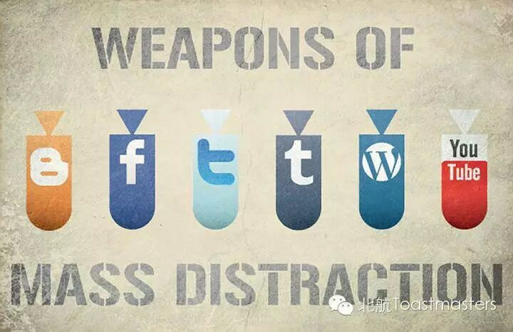

Toastmaster: Isabelle
Table Topic Master: Jane
North & South
People seem to like find himself in a group to avoid alone and to have a sense of belonging. Hence there appears Beijing man & Shanghai man, northerners & southerners, Chinese & foreigners, human & alien, etc. There is a French comedy movie called ‘Bienvenue chezles Ch'tis’, ‘Welcome to the north’ in English. In the film the south people have a great prejudice against the north. The situations are always the same everywhere. So, in China, what is the North's evaluation of the South? What do southerners think about the northerners? What the reality is? Come to our meeting this Friday! Looking forward to your special opinion!
WeChat Is An Ocean
In 1999, QQ came in to this world. We should see it’s a fantastic invention. Now everyone has one or more QQ numbers.Eleven years later, the company rolled out another product, WeChat. Now four years passed. Again almost everybody has WeChat. WeChat moments provide us a platform to express our emotion or share meaningful moments or articles. We can do all kinds of things in WeChat.But is it always good to use WeChat? Let’s welcome Grace Zhang to share her own opinion on WeChat.

Why Is Technology Dangerous
When I wrote an English composition in my junior high school, I always started with the sentence like, thanks to the development of new technology, now we can…Deng Xiaoping said, Science and technology constitute the primary productive force. Technology makes it possible to use mobile phone. Technology takes people to the moon. Technology makes the world smaller and smaller. While, our intelligent rose lover Jack doesn’t seem to think so. Let’s wait and see.